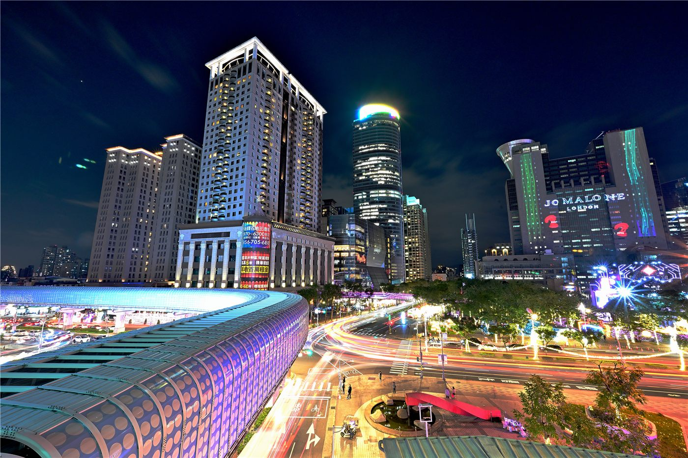

신베이 산잉선 MRT, 하카·예술 테마 열차 공개
신베이시가 산잉(三鶯)선 MRT에 하카 문화와 예술을 입힌 테마 열차를 선보였다. 대중교통에 지역 문화를 녹여 ‘움직이는 갤러리’를 만든 시도다.
전금문 기자 · 2026.06.30
橋대만

타이베이타임스(Taipei Times)에 따르면 신베이시는 산잉선 MRT에 하카(客家) 문화와 예술을 주제로 한 디자인 열차를 공개했다.
광고 문의 · 300×250테마 열차는 지역의 역사·문화 정체성을 시각적으로 표현해 승객에게 색다른 경험을 제공한다. 대중교통이 문화 전달의 매개가 되는 사례다.
산잉선은 신베이 지역의 교통 편의를 높이는 노선으로, 문화 콘텐츠를 더해 노선의 상징성과 친근감을 키웠다.
지역 문화를 교통·공공 공간에 접목하는 시도는 관광·도시 브랜딩 측면에서도 효과가 기대된다.
華橋時報는 일상의 공간에 문화를 입히는 시도가 지역 정체성과 공동체의 자부심을 어떻게 키우는지 주목한다.